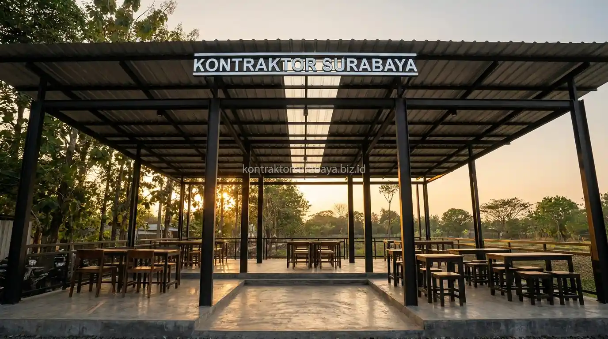

Modal terbatas bukan berarti konsep cafe outdoor modern tidak bisa terwujud, selama alokasi anggaran disusun dengan mempertimbangkan skala prioritas yang tepat. Bagian berikut membahas komponen biaya utama, contoh simulasi alokasi anggaran, tips menghemat biaya, hingga kesalahan umum yang perlu dihindari saat membangun cafe outdoor dengan budget terbatas di Gresik bersama tim kontraktor bangunan komersial berpengalaman.
Fenomena cafe outdoor di kawasan Gresik dan sekitarnya terus bertumbuh pesat seiring tingginya minat generasi muda untuk menikmati ruang terbuka yang asri dan santai. Dengan mengeliminasi dinding bata konvensional yang masif, Anda tidak hanya memangkas biaya pembelian material dan upah tukang secara signifikan, tetapi juga menciptakan atmosfer nongkrong yang lebih sejuk dan menyatu dengan alam.
1. Komponen Biaya Utama Pembangunan Cafe Outdoor
Beberapa komponen berikut umumnya menjadi pos anggaran utama dalam pembangunan cafe outdoor minimalis yang perlu direncanakan secara cermat:
- Struktur Rangka Baja Ringan untuk Kolom dan Atap Utama: Menggantikan tiang beton bertulang tebal dengan profil kanal C baja ringan berkualitas SNI atau kombinasi pipa hollow galvanis yang kokoh menahan beban kanopi bentang lebar.
- Penutup Atap Peneduh: Kombinasi penutup atap seng metal berpasir kedap suara untuk area meja utama dengan material transparan (polycarbonate atau solarflat) pada area tertentu untuk pencahayaan alami tanpa terkesan gelap.
- Pekerjaan Lantai dan Sirkulasi: Pengerasan area duduk pengunjung menggunakan perpaduan cor semen ekspos (polished concrete), paving block berpori, dan taburan batu koral hias untuk memudahkan resapan air hujan.
- Furniture Dasar dan Counter Bar: Pengadaan meja, kursi santai outdoor tahan cuaca, serta pembuatan booth kasir atau counter bar kecil berbahan bata ringan ekspos atau rangka besi kombinasi kayu pinus sintetis.
- Instalasi Listrik Dasar dan Pencahayaan: Pemasangan kabel outdoor tahan air (waterproof NYY), titik stop kontak di area duduk, saklar MCB terpisah, serta deretan lampu gantung minimalis bertemperatur warm white.

2. Contoh Simulasi Alokasi Anggaran Budget 150 Juta
Sebagai ilustrasi umum, anggaran 150 juta rupiah untuk cafe outdoor minimalis dapat dialokasikan dengan porsi terbesar pada struktur baja ringan dan atap karena keduanya menjadi elemen utama yang menopang seluruh bangunan. Sisa anggaran kemudian dibagi untuk pekerjaan lantai, instalasi listrik dasar, serta furniture dan area kasir dalam porsi yang lebih kecil. Simulasi ini bersifat ilustrasi kasar dan dapat berbeda pada penerapan nyata tergantung luas area, pemilihan material akhir, dan kondisi lahan di lokasi proyek.
Berikut adalah simulasi rincian alokasi anggaran Rp 150 juta untuk cafe outdoor dengan luasan area efektif sekitar 60 hingga 80 meter persegi:
| Pos Pekerjaan Konstruksi | Persentase (%) | Estimasi Biaya (Rp) | Uraian Pekerjaan & Material |
|---|---|---|---|
| 1. Persiapan Lahan & Pondasi | 12% | Rp 18.000.000 | Pembersihan semak, perataan tanah, pondasi tapak setempat (footplate mini), dan sloof pengikat kolom. |
| 2. Rangka Struktur Baja Ringan | 30% | Rp 45.000.000 | Kolom ganda baja ringan / hollow galvanis, kuda-kuda atap, gording, bracing angin, dan baut dynabolt. |
| 3. Penutup Atap & Talang Air | 15% | Rp 22.500.000 | Atap spandek pasir peredam bising, lisplang fiber semen, talang PVC tebal, dan pipa pembuangan air hujan. |
| 4. Perkerasan Lantai Outdoor | 17% | Rp 25.500.000 | Pemasangan paving block press hidrolik, rabat semen ekspos, dan taburan kerikil split/batu koral taman. |
| 5. Instalasi Listrik, Air & Sanitasi | 12% | Rp 18.000.000 | Jalur kabel NYY outdoor, stop kontak meja, panel MCB, pipa air bersih, wastafel mini, dan grease trap portabel. |
| 6. Furniture Dasar & Bar Kasir | 10% | Rp 15.000.000 | Meja kursi komposit/baja ringan untuk 30–40 pengunjung dan meja bar kasir semen unfinish kombinasi kayu. |
| 7. Finishing & Dana Tak Terduga | 4% | Rp 6.000.000 | Pengecatan anti karat, lampu gantung cafe hias, dan cadangan kontinjensi jika ada penyesuaian lapangan. |
| TOTAL ANGGARAN | 100% | Rp 150.000.000 | Estimasi acuan cafe outdoor seluas ~60–80 m² di Gresik |
Rincian di atas membuktikan bahwa anggaran Rp 150 juta sangat rasional untuk mewujudkan cafe outdoor yang layak operasi dan estetik. Untuk menghitung kebutuhan spesifik sesuai bentuk kontur tanah Anda di Gresik, konsultasikan penyusunan RAB & estimasi biaya bersama tim profesional kami agar angka yang dialokasikan terukur tanpa risiko pembengkakan biaya (overbudget).
3. Tips Menghemat Biaya Tanpa Mengurangi Kesan Modern
Beberapa pendekatan berikut umum diterapkan untuk menekan biaya tanpa menghilangkan kesan modern pada cafe outdoor di kawasan Gresik:
- Penggunaan Struktur Terbuka Tanpa Dinding Masif: Menghilangkan dinding bata merah atau hebel plester aci mengurangi kebutuhan material semen, pasir, dan upah plester-acian hingga 40% dari total biaya konstruksi standar.
- Pemilihan Material Lokal di Wilayah Gresik: Gresik dikenal sebagai salah satu pusat industri material bangunan utama di Jawa Timur, mulai dari pabrik semen, pasir, hingga produk paving block. Membeli langsung dari distributor atau produsen lokal di Gresik sangat memangkas ongkos armada logistik pengiriman.
- Pencahayaan Sederhana Bernuansa Hangat: Gunakan string lights (lampu gantung kabel untai) bohlam Edison LED warm white 4–5 watt. Efek visualnya sangat fotogenik dan instagramable di malam hari, namun membutuhkan instalasi kelistrikan yang jauh lebih ringkas dan hemat daya.
- Lantai Paving dan Batu Koral Alami: Memadukan paving block conblock semen dengan taburan batu koral kali di sela meja tidak hanya menghemat biaya semen cor lantai, melainkan juga mempermudah peresapan air hujan langsung ke tanah sehingga bebas becek.
Anda juga dapat melihat portofolio proyek konstruksi komersial, ruko, dan cafe yang telah kami selesaikan di halaman galeri proyek kami untuk mencari inspirasi bentuk struktur dan material hemat biaya.
4. Bisakah Pembangunan Cafe Outdoor Dilakukan secara Bertahap?
Pembangunan cafe outdoor dengan modal terbatas dapat dilakukan secara bertahap, misalnya menyelesaikan struktur utama dan area duduk inti terlebih dahulu sebelum menambah area perluasan pada tahap berikutnya. Pendekatan bertahap ini membantu pemilik usaha tetap dapat mulai beroperasi lebih awal (soft opening) sambil menyesuaikan pengembangan lanjutan dengan kondisi arus kas usaha.
Namun, pembangunan bertahap membutuhkan masterplan arsitektur yang matang sejak awal. Pastikan posisi septic tank, bak grease trap dapur, dan jalur kabel listrik bawah tanah sudah diletakkan pada titik akhir yang tepat agar saat penambahan kanopi atau area duduk di masa depan, Anda tidak perlu membongkar lantai paving yang telah selesai dibangun.
5. Kesalahan Umum saat Membangun Cafe Outdoor dengan Budget Terbatas
Berdasarkan pengalaman lapangan tim insinyur Kontraktor Surabaya di wilayah Gresik, beberapa kekeliruan fatal yang sering dialami pemilik modal pemula antara lain:
- Terlalu Terpaku pada Dekorasi Estetis di Awal: Membeli ornamen foto mahal atau lampu dekoratif impor sebelum struktur atap, lantai, dan instalasi dasar selesai dengan baik, sehingga dana habis sebelum fungsi bangunan terpenuhi.
- Memilih Material Atap yang Kurang Tahan Cuaca Tropis: Memasang seng polos murah yang tipis tanpa peredam membuat area cafe terasa seperti oven di siang hari terik pesisir Gresik serta menimbulkan suara bising memekakkan telinga saat hujan turun lebat.
- Mengabaikan Saluran Drainase dan Resapan Air: Meremehkan kemiringan lantai tanah sehingga saat hujan lebat air menggenang di bawah meja kursi pengunjung, menimbulkan becek dan kesan cafe yang kotor serta kumuh.
- Instalasi Elektrikal Tidak Berspesifikasi Outdoor: Menggunakan stop kontak dan kabel indoor yang rentan korsleting saat terkena percikan tampias air hujan, membahayakan keselamatan staf maupun tamu cafe.
"Membangun cafe outdoor dengan modal hemat bukan berarti mengorbankan durabilitas bangunan. Kuncinya ada pada kekuatan struktur utama, pemilihan atap yang tahan cuaca tropis, dan perencanaan alokasi anggaran yang disiplin sejak hari pertama." — Erlang Sinatrya, Lead Project Engineer Kontraktor Surabaya
Bagi Anda yang ingin mewujudkan unit usaha cafe, resto, maupun ruko komersial di kawasan Gresik, konsultasikan langsung rencana Anda bersama tim kontraktor bangunan komersial kami untuk mendapatkan estimasi rancang bangun yang presisi dan tepat sasaran.